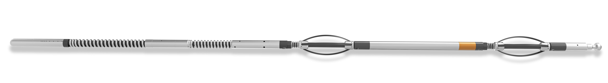

What is Pump
Down?
The "Pump down" method refers to the process of deploying survey tools into the wellbore by using fluid pressure to push the tools down the well. This technique is particularly useful in horizontal or highly deviated wells where traditional methods may be less effective. By utilizing the pump down method, our gyro survey tools can quickly reach the desired depth, providing accurate and reliable wellbore data.
Why Pump Down ?
At TASK Energy Services, our Pump Down Gyro Survey Service is designed to deliver precise wellbore surveys efficiently and cost-effectively. By leveraging cutting-edge technology and innovative deployment methods, we ensure accurate wellbore positioning and trajectory data, essential for the success of your drilling operations.
Key Features
- High Accuracy
Our pump down gyro tools offer precise measurements, ensuring accurate wellbore positioning and trajectory data.
- Rapid Deployment
The pump down method allows for quick and efficient tool deployment, minimizing downtime and enhancing operational efficiency. - Versatility
Ideal for horizontal, deviated, and complex wells, our gyro tools are adaptable to various well conditions and requirements. - Robust Technology
Our advanced gyro tools are built to withstand challenging downhole environments, providing reliable data under demanding conditions. - Advanced Technology
Leveraging the latest in gyro technology, our surveys provide reliable data in challenging environments, ensuring dependable results. - Expert Support
From planning to execution, our experienced team provides comprehensive support to ensure the success of your survey operations.
How Pump Down is Used ?
- Tool Preparation
The gyro survey tool is prepared and configured for the specific well conditions.
- Deployment
The tool is introduced into the wellbore, and fluid pressure is applied to pump the tool down to the desired survey depth.
- Data Acquisition
Once at depth, the gyro tool captures precise wellbore trajectory and positioning data.
- Data Retrieval
The tool is brought back to the surface, and the collected data is downloaded and analyzed.
- Reporting
A comprehensive report is generated, providing detailed insights into the wellbore trajectory and other critical parameters.
Cost Reduction Benefits
- Reduced Non-Productive Time
The efficient deployment of pump down gyro tools minimizes downtime, keeping operations on schedule and reducing costs. - Enhanced Accuracy
Precise wellbore data decreases the likelihood of errors and re-drills, optimizing resource utilization and budget management. - Lower Operational Costs
Faster deployment and data acquisition translate to reduced rig time, significantly cutting down on overall operational expenses. - Improved Decision Making
Detailed and accurate data support better decision-making, enhancing drilling strategies and minimizing risks. - Maintenance Savings
Our durable gyro tools require less frequent maintenance and replacements, further reducing operational costs.
Applications
- Horizontal and Deviated Wells
Ensure accurate trajectory data in complex wellbore geometries. - Directional Drilling
Enhance the precision of directional drilling operations. - Collision Avoidance
Prevent wellbore collisions and interference with existing wells. - Formation Evaluation
Obtain reliable data for improved reservoir management and resource extraction.